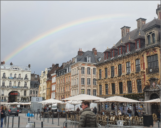

|  | |||
|---|---|---|---|
| 프랑스 | 릴은 벨기에와의 국경에 가까운 플랑드르 지방의 중심 도시로, 파리의 북쪽 약 220km 지점, 되르강(江) 연안에 전개된 평야에 위치한다. 이곳에는 1887년 이래 대학이 세워졌으며, 그후 아카데미·주교좌(主敎座) 등이 설치되어, 학술·문화의 중심지를 이룬다. 그러나 릴은 프랑스 북부공업지대의 중심도시로서 중요하다. [네이버 지식백과] 릴 [Lille] (두산백과 두피디아, 두산백과) | ||
| 유럽여행 | 릴 | 여행추천 | 지롱드 기념비는 보르도의 역사적인 중심이자 아름다운 랜드마크입니다. 웅장한 모습은 보르도의 아름다움을 한눈에 알아볼 수 있게 해주며, 이곳을 방문한 순간 프랑스 혁명의 역사와 함께한 느낌을 받을 수 있습니다. 야간에는 조명이 밝혀져 기념비의 아름다움을 더욱 감상할 수 있었습니다. |
| 여행시간 | 3시간 | 여행일자 | 2023. 01. 11 |